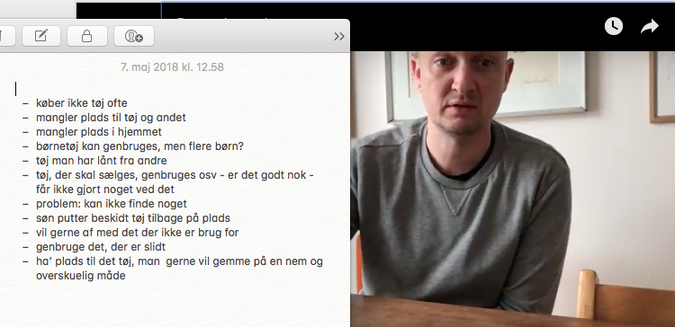
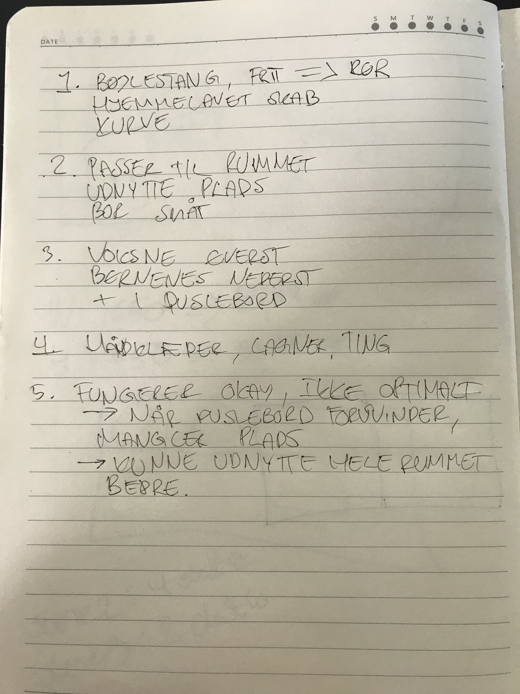

BRUGERINTERVIEWS
ANDERS
What?
- Anders mangler plads (til tøj)
- Han har for meget tøj liggende, som ikke bliver brugt
- Anders ved ikke, hvad han skal gøre ved børnetøj, som måske skal bruges igen, lånt tøj, tøj til genbrug, tøj til salg, tøj der skal gemmes
- Det er et problem, fordi man ikke kan finde noget hurtigt
- Anders vil gerne af med det tøj, der ikke bliver brugt
- Vil gerne have en nem og overskuelig opbevaringsløsning til det tøj, der skal gemmes
How?
- Anders er forvirret over, hvordan han skal tilgå problemet
- Han er opgivende
- En anelse doven - han besidder løsningerne, men gør ikke noget ved det
Why?
- Anders mangler overskud til at få tingene gjort
- Finder opgaven uoverskuelig
SHAWNA
Spørgsmål
- Hvad har du dit tøj i?
- Hvorfor har du valgt den løsning?
- Hvordan organiser du dit tøj?
- Bruger du dit klædeskab til andet end tøj - hvis ja, hvad?
- Hvordan fungerer det for dig?
What?
- Tøjet obvares i hjemmebygget skab bestående af bøjlestang, samt hylder med kurve
- Skabet er bygget så det passer til rummet, for at udnytte pladsen, da de bor småt
- Indeholder både de vosknes og børnenes tøj - opdelt oppe og nede
- Børnene har også tøj i puslebord
- Skabet indeholder også håndklæder, lagner og ting de ikke bruger så tit
- Skabet fungerer okay nu, men ikke på sigt, når puslebordet skal fjernes, da der så vil mangle plads til tøjet derfra
- Ønsker en ny opbevaringslødsning som passer bedre til rummet og deres behov
How?
- Overordnet set glad og tilfreds
- Gåpåmod ift. at forbedre
Why?
- Shawna ønsker en langsigtet løsning, der fungerer for hendes familie
- Hverdagen med familie og børn er motivator for at finde en løsning, der fungerer bedre end den nuværende
- Hun har ideer